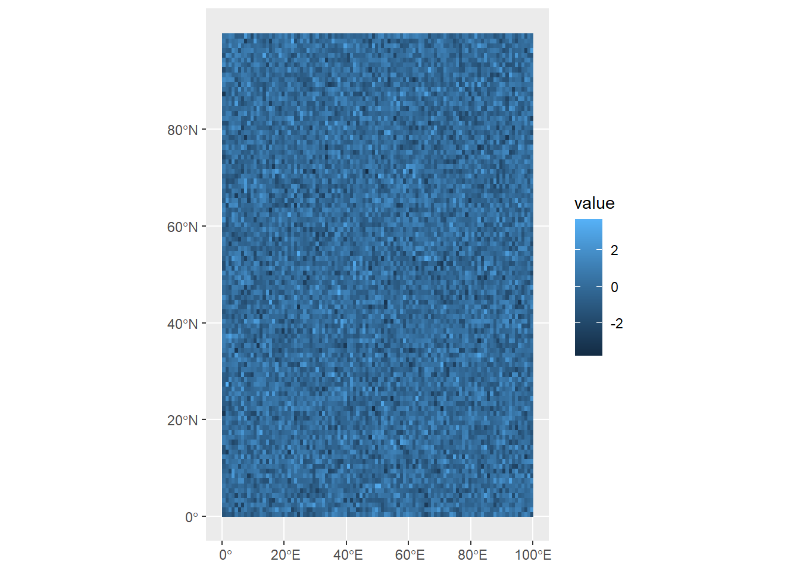
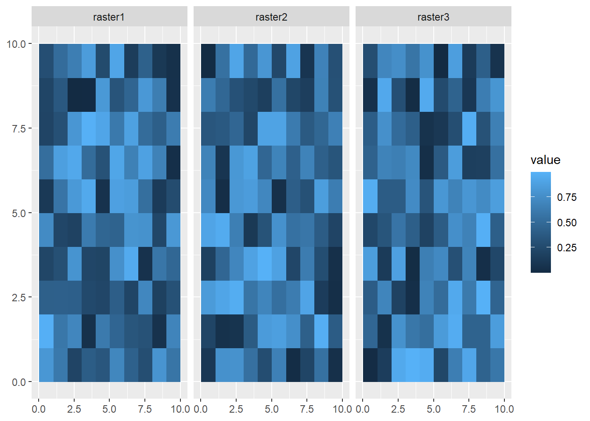

#Generate 10000 random values
randomValues<-rnorm(10000,0,1)
randomValues[1:10] [1] 0.4815981 0.4892307 -0.4872740 -0.6054691 -0.5915479 0.2240629
[7] -1.3027638 -0.3034218 0.7037910 2.0312183The terra package is used to deal with spatial data, but specifically with rasters. A major advantage of this package is its ability to work with large datasets. Rasters can include a lot of data; for example, a single coverage of a 5 km2 area at a 1m resolution contains 25 million grid cells. The terra package makes handling data at these volumes more manageable.
A raster is closely related to another object called a matrix, which is a rectangular array of numbers. They are used in mathematics for mapping relationships between linear systems, and serve a number of functions in computer science.
For our purposes, we can think think of them as a geographic coordinate space, where the column and row numbers are equivalent to x position and y position, and every value in that space is a measurement of some variable (e.g., temperature, elevation, etc.)
To show how this works, we’re going to dip back into Base R for a moment. First, let’s use rnorm to generate a set of 10,000 random values, normally distributed around a mean of 0 and with a standard deviation of 1.
#Generate 10000 random values
randomValues<-rnorm(10000,0,1)
randomValues[1:10] [1] 0.4815981 0.4892307 -0.4872740 -0.6054691 -0.5915479 0.2240629
[7] -1.3027638 -0.3034218 0.7037910 2.0312183Here, we’re using square brackets to look at the first ten of these random values. Now let’s say we want to take this and turn it into a matrix with 100 rows and 100 columns. We can use our randomValues as an argument in the matrix function, along with arguments for the number of rows (nrow) and columns (ncol):
#Generate 10000 random values in a 10x10 matrix
randomMatrix<-matrix(randomValues,nrow=100,ncol=100)
#Show first ten rows of first three columns
randomMatrix[1:10,1:3] [,1] [,2] [,3]
[1,] 0.4815981 2.480518365 0.8019635
[2,] 0.4892307 0.008974824 -0.7268542
[3,] -0.4872740 -1.059949598 1.0804942
[4,] -0.6054691 0.844388995 0.9780196
[5,] -0.5915479 0.581425176 1.7163744
[6,] 0.2240629 -0.149400051 0.7089475
[7,] -1.3027638 -0.272225604 0.6686689
[8,] -0.3034218 -0.024754835 0.6252871
[9,] 0.7037910 -1.120705240 0.2958668
[10,] 2.0312183 0.657129012 1.5200156This gives us a sense of what the matrix looks like: the far left shows row numbers, while the top has column numbers, both in square brackets. The numbers in between are the random values we generated, but now organized in a 100 x 100 matrix. We can see how many rows and columns are in the matrix using the dim function:
dim(randomMatrix)[1] 100 100OK, now that we have data, we want to turn it into a raster.
#Turn matrix into SpatRaster object
randomRaster<-rast(randomMatrix)
randomRasterclass : SpatRaster
dimensions : 100, 100, 1 (nrow, ncol, nlyr)
resolution : 1, 1 (x, y)
extent : 0, 100, 0, 100 (xmin, xmax, ymin, ymax)
coord. ref. :
source(s) : memory
name : lyr.1
min value : -3.557857
max value : 3.933087 This gives us some information about the spatRaster object, including:
dimensions (100 rows, 100 columns, 1 layer)
resolution (the size of a single cell, here 1x1)
extent (like a bounding box, giving the maximum and minimum x and y values)
coord. ref (CRS, not yet defined here)
name of the variable (lyr.1 by default since we didn’t specify), and the minimum and maximum values.
One of these properties worth mentioning is resolution, which is the size of a grid cell. Grids with smaller cells are better resolved, but this comes at a computational cost of recording, storing, and manipulating much more data. Anyone dealing with raster data must therefore make choices about what resolution is necessary for their purposes, and anyone later using that data must account for the resolution of the data.
If we want to visualize these using ggplot2, we need an appropriate geom. The geom_spatraster function comes from tidyterra, which is built to simplify interactionse between terra and tidyverse:
ggplot()+
geom_spatraster(data=randomRaster)The syntax is very similar to what we saw with geom_sf, but this visualization shows what raster data looks like: gridded cells where the x and y position of each cell is determined by its column and row number, and its color is based on the value assigned at that position. Of course, being randomly generated data, it doesn’t show a pattern.
Right now, our random data are distributed in an abstract 100x100 coordinate space. If we want to make our data useful for understanding the world, we need to use coordinates based on a reference system. Like sf objects, spatRaster objects also need a CRS to do this.
The crs function lets us do this; however, it requires a character value rather than a number. We can still use the EPSG codes we learned about last week, but this just needs to be preceded by epsg: and put into quotation marks, like so:
crs(randomRaster) <- "epsg:4326"
randomRasterclass : SpatRaster
dimensions : 100, 100, 1 (nrow, ncol, nlyr)
resolution : 1, 1 (x, y)
extent : 0, 100, 0, 100 (xmin, xmax, ymin, ymax)
coord. ref. : lon/lat WGS 84 (EPSG:4326)
source(s) : memory
name : lyr.1
min value : -3.557857
max value : 3.933087 Now when we plot the data, the coordinates (position in the matrix) are given as degrees longitude and latitude:
ggplot()+
geom_spatraster(data=randomRaster)
Try and run through the example above again, but when you create the randomValues vector, use the sort function
One more thing to be aware of is multirasters: these are raster datasets with multiple layers. These can be useful for storing different kinds of data within the same spatRaster object, or storing raster data that’s been collected over time. To do this, we’ll generate three random rasters, and then combine them just as we would a vector:
#Generate 100 random values in a 10x10 matrix
randomValues1<-matrix(runif(100,0,1),nrow=10,ncol=10)
randomValues2<-matrix(runif(100,0,1),nrow=10,ncol=10)
randomValues3<-matrix(runif(100,0,1),nrow=10,ncol=10)
raster1<-rast(randomValues1)
raster2<-rast(randomValues2)
raster3<-rast(randomValues3)
multiRaster<-c(raster1,raster2,raster3)We can see how many layers are in this dataset using the nlyr function:
nlyr(multiRaster)[1] 3When we look at this data, though, each raster in the set has the same default name:
multiRasterclass : SpatRaster
dimensions : 10, 10, 3 (nrow, ncol, nlyr)
resolution : 1, 1 (x, y)
extent : 0, 10, 0, 10 (xmin, xmax, ymin, ymax)
coord. ref. :
source(s) : memory
names : lyr.1, lyr.1, lyr.1
min values : 0.005984849, 0.00604978, 0.03306967
max values : 0.995886470, 0.99639613, 0.99844121 We can access layer names using the names function, and assign a vector of layer names as character values:
names(multiRaster)<-c("raster1","raster2","raster3")
multiRasterclass : SpatRaster
dimensions : 10, 10, 3 (nrow, ncol, nlyr)
resolution : 1, 1 (x, y)
extent : 0, 10, 0, 10 (xmin, xmax, ymin, ymax)
coord. ref. :
source(s) : memory
names : raster1, raster2, raster3
min values : 0.005984849, 0.00604978, 0.03306967
max values : 0.995886470, 0.99639613, 0.99844121 Visualizing all the layers here requires us to use the facet_wrap function, and the argument we use is ~lyr. This is accessing the lyr (layer) property of the spatRaster object.
ggplot() +
geom_spatraster(data = multiRaster) +
facet_wrap(~lyr)
If you want to extract a single raster from this set, you can use the $ operator:
firstRaster<-multiRaster$raster1
ggplot() +
geom_spatraster(data = firstRaster)Or you can you use square brackets:
secondRaster<-multiRaster['raster2']
ggplot() +
geom_spatraster(data = secondRaster)While building rasters from scratch helps us understand the object’s properties, most uses in data science will involve loading in raster data from a file. Raster data can be read into R from a number of different file formats (check here for a full list), but generally speaking most common image formats can be read as rasters (e.g., .jpg, .bmp, .img). One of the most common formats used to store raster data is a GeoTIFF (.tif) file.
turkanaDEM<-rast("data/turkanaDEM.tif")
turkanaDEMclass : SpatRaster
dimensions : 720, 720, 1 (nrow, ncol, nlyr)
resolution : 0.004166667, 0.004166667 (x, y)
extent : 35, 38, 2, 5 (xmin, xmax, ymin, ymax)
coord. ref. : lon/lat WGS 84 (EPSG:4326)
source : turkanaDEM.tif
name : turkanaDEM Like the data we created, we can see the properties of this dataset like its extent and resolution. Plotting is also the same as above using geom_spatraster:
ggplot() +
geom_spatraster(data=turkanaDEM)
Here, we can see the elevation values mapped out, with a few peaks extending over 2000 meters a.s.l.
Multilayer rasters can also be stored as GeoTIFFs, and satellite images are often stored this way and include multiple layers for different color bands. Another common standard used in the earth sciences for multilayer rasters is a NetCDF (.nc) file. Here, we’ll load in a NetCDF of monthly rainfall values for the Lake Turkana area.
turkanaRain<-rast("data/turkanaRain.nc")
turkanaRainclass : SpatRaster
dimensions : 72, 72, 756 (nrow, ncol, nlyr)
resolution : 0.04166667, 0.04166667 (x, y)
extent : 35, 38, 2, 5 (xmin, xmax, ymin, ymax)
coord. ref. : lon/lat WGS 84 (EPSG:4326)
source : turkanaRain.nc
names : turka~ain_1, turka~ain_2, turka~ain_3, turka~ain_4, turka~ain_5, turka~ain_6, ... And we can check the number of layers:
nlyr(turkanaRain)[1] 756Multilayer rasters can be subset using the select function (thanks to tidyterra!):
turkanaRain4<-select(turkanaRain,c('turkanaRain_1':'turkanaRain_4'))
turkanaRain4class : SpatRaster
dimensions : 72, 72, 4 (nrow, ncol, nlyr)
resolution : 0.04166667, 0.04166667 (x, y)
extent : 35, 38, 2, 5 (xmin, xmax, ymin, ymax)
coord. ref. : lon/lat WGS 84 (EPSG:4326)
source : turkanaRain.nc
names : turkanaRain_1, turkanaRain_2, turkanaRain_3, turkanaRain_4 Raster data operates similarly to the 2D bin objects we’ve seen before, so all of the scale_fill_* functions apply here. For example, scale_fill_gradient will plot between low and high values:
ggplot() +
geom_spatraster(data=turkanaDEM) +
scale_fill_gradient(low="blue",high="red") Or we can use scale_fill_gradient2 to use divergent colors, here using a midpoint of 1000m:
ggplot() +
geom_spatraster(data=turkanaDEM) +
scale_fill_gradient2(low="red",mid="yellow",high="darkgreen",midpoint=1000) By the way, if we want to generate summary statistic about the cell values in our raster, we can access these using the values function:
medElev<-median(values(turkanaDEM))
ggplot() +
geom_spatraster(data=turkanaDEM) +
scale_fill_gradient2(low="red",mid="yellow",high="darkgreen",midpoint=medElev) medElev<-median(values(turkanaDEM))
ggplot() +
geom_spatraster(data=turkanaDEM) +
scale_fill_viridis_c(option="magma")With elevation data, though, we usually want to apply colors to particular elevation levels. Remembering back to Week 7, we can do this with our friend rescale from the scales package:
library(scales)
Attaching package: 'scales'The following object is masked from 'package:terra':
rescaleThe following object is masked from 'package:purrr':
discardThe following object is masked from 'package:readr':
col_factormn<-min(values(turkanaDEM))
mx<-max(values(turkanaDEM))
rescaledElev<-rescale(c(mn,500,1000,1500,2000,mx),to=c(0,1))Here what we’ve done is first create variables storing the minimum and maximum values from the raster. Then we used rescale to create a vector of values between that minimum and maximum, but scaled between 0 and 1. Now we can use these to control the plot with scale_fill_gradientn:
ggplot() +
geom_spatraster(data=turkanaDEM) +
scale_fill_gradientn(colors=c("darkgreen","yellow","brown","tan","white"),values=rescaledElev)However, we also know that there’s a lake in there somewhere, so we might want to indicate those colors with blue. The surface elevation of Lake Turkana is 360 meters, so we can set a hard boundary by adding two values after the minimum: 360 and 361
rescaledElev<-rescale(c(mn,360,361,500,1000,1500,2000,mx),to=c(0,1))Now when we run the ggplot, we can add two new colors: dark blue and blue, so our values will scale up to blue shades only through to 361
ggplot() +
geom_spatraster(data=turkanaDEM) +
scale_fill_gradientn(colors=c("darkblue","blue","darkgreen","yellow","brown","tan","white"),values=rescaledElev) +
theme_minimal() +
labs(fill="Elevation (masl)")The same principles work for multilayer rasters. We can apply these individually:
ggplot() +
geom_spatraster(data=turkanaRain$turkanaRain_4) +
scale_fill_distiller(palette = "RdBu",direction=1)Or we can plot values across multiple rasters using facet_wrap:
ggplot() +
geom_spatraster(data=turkanaRain4) +
facet_wrap(~lyr) +
scale_fill_distiller(palette = "RdBu",direction=1,na.value="black")Note that bit at the end where it reads na.values="black". This can be used in any scale_color or scale_fill function to account data points that have NA values. It’s important to make sure that your NA values are colored using a value that does not appear in your scale. However, here we have no NA values, so there are no black cells.
Raster algebra is the task of modifying values . You could think of this as akin to the mutate function. For example, let’s say we wanted to convert our elevation data, currently in meters above sea level, to feet. The conversion from meters to feet is:
\[ m \times 3.28 \]
To apply this across our raster, we simply multiply it by 3.28.
#convert m to feet
turkanaDEM_ft<-turkanaDEM*3.28We can also use raster algebra on more than one raster. For example, let’s say we wanted to sum the rainfall for the first four months in the rainfall data. We can use our turkanaRain4 data from earlier and sum the values in the four layers:
#convert m to feet
turkanaRain_JanApr<-sum(turkanaRain4)
turkanaRain_JanAprclass : SpatRaster
dimensions : 72, 72, 1 (nrow, ncol, nlyr)
resolution : 0.04166667, 0.04166667 (x, y)
extent : 35, 38, 2, 5 (xmin, xmax, ymin, ymax)
coord. ref. : lon/lat WGS 84 (EPSG:4326)
source(s) : memory
name : sum
min value : 97.1
max value : 414.9 As you can see, this creates a new raster based on the sum of the four layers in the dataset.
Try seeing if you can ta mean of the first twelve layers of the rainfall data and convert it into inches.